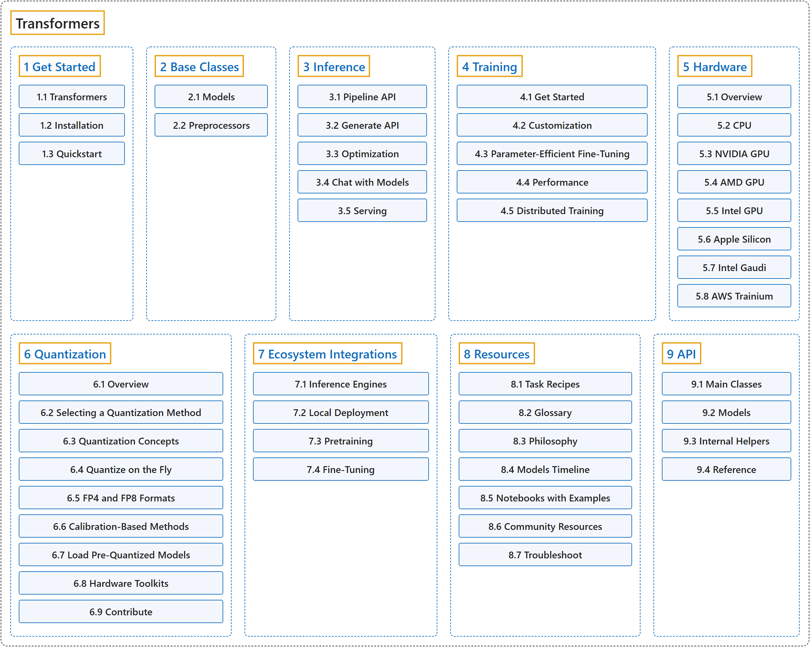

Transformers
Classification

Glossary
| Term | Definition | 中文翻译 | Source |
|---|---|---|---|
| Transformers Transformers |
"Transformers acts as the model-definition framework for state-of-the-art machine learning models in text, computer vision, audio, video, and multimodal models, for both inference and training." | Transformers 充当最先进的机器学习模型的模型定义框架，覆盖文本、计算机视觉、音频、视频和多模态模型，既用于推理也用于训练。 | Hugging Face, n.d., "Transformers", para. 1 |
| 1 Get Started 入门 |
(context) "Transformers is designed to be fast and easy to use so that everyone can start learning or building with transformer models." | （语境）Transformers 的设计目标是快速、易用，让每个人都能开始学习或用 transformer 模型构建应用。 | Hugging Face, n.d., "Quickstart", para. 1 |
| 2 Base Classes 基础类 |
(context) "Transformers provides many pretrained models that are ready to use with a single line of code." | （语境）Transformers 提供许多只需一行代码就能使用的预训练模型。 | Hugging Face, n.d., "Loading models", para. 1 |
| 3 Inference 推理 |
(context) "The Pipeline is a simple but powerful inference API that is readily available for a variety of machine learning tasks with any model from the Hugging Face Hub." | （语境）Pipeline 是一个简单而强大的推理 API，可以直接搭配 Hugging Face Hub 上的任何模型，用于各种机器学习任务。 | Hugging Face, n.d., "Pipeline", para. 1 |
| 4 Training 训练 |
(context) "Trainer is a complete training and evaluation loop for Transformers models." | （语境）Trainer 是一个面向 Transformers 模型的完整训练与评估循环。 | Hugging Face, n.d., "Trainer", para. 1 |
| 5 Hardware 硬件 |
"Transformers runs on CPUs, NVIDIA GPUs, AMD GPUs, Apple Silicon, Google TPUs, AWS Trainium instances, and more through their PyTorch backends." | Transformers 通过各自的 PyTorch 后端运行在 CPU、NVIDIA GPU、AMD GPU、Apple Silicon、Google TPU、AWS Trainium 实例等硬件上。 | Hugging Face, n.d., "Hardware", para. 1 |
| 6 Quantization 量化 |
"Quantization lowers the memory requirements of loading and using a model by storing the weights in a lower precision while trying to preserve as much accuracy as possible." | 量化通过以更低精度存储权重，降低加载和使用模型的内存需求，同时尽量保留准确率。 | Hugging Face, n.d., "Overview" (Quantization), para. 1 |
| 7 Ecosystem Integrations 生态集成 |
(context) "Transformers models are compatible with inference engines like vLLM and SGLang." | （语境）Transformers 模型与 vLLM、SGLang 等推理引擎兼容。 | Hugging Face, n.d., "Building a compatible model backend for inference", para. 1 |
| 8 Resources 资源 |
(context) "This glossary defines general machine learning and 🤗 Transformers terms to help you better understand the documentation." | （语境）本术语表定义一般的机器学习术语和 🤗 Transformers 术语，帮助你更好地理解文档。 | Hugging Face, n.d., "Glossary", para. 1 |
| 9 API API |
(context) "In many cases, the architecture you want to use can be guessed from the name or the path of the pretrained model you are supplying to the from_pretrained() method. AutoClasses are here to do this job for you so that you automatically retrieve the relevant model given the name/path to the pretrained weights/config/vocabulary." |
（语境）很多情况下，你要用的架构可以从你传给 from_pretrained() 方法的预训练模型的名称或路径猜出来。AutoClasses 替你完成这件事，让你根据预训练权重、配置或词表的名称或路径自动取得相应的模型。 |
Hugging Face, n.d., "Auto classes", para. 1 |
References
Hugging Face. (n.d.). Transformers documentation (Version 5.20.2). Retrieved October 30, 2026, from https://huggingface.co/docs/transformers/v5.20.2/en/index